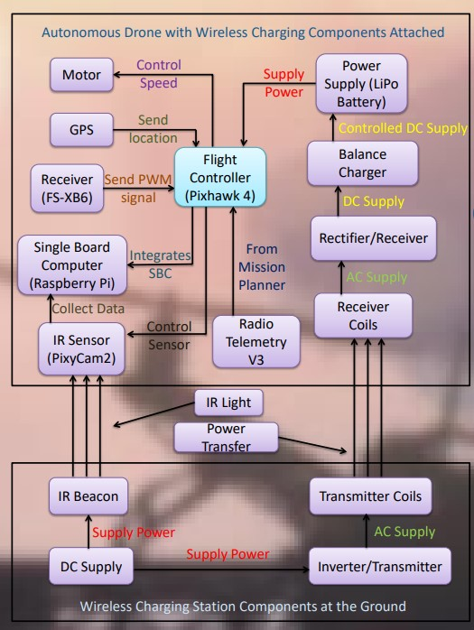
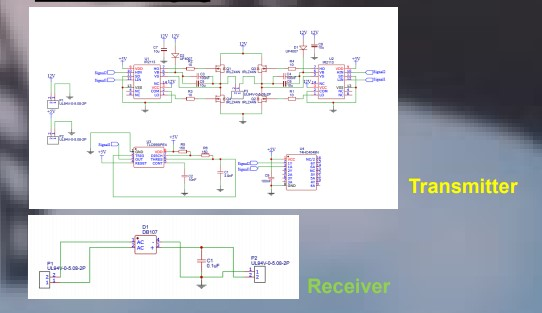
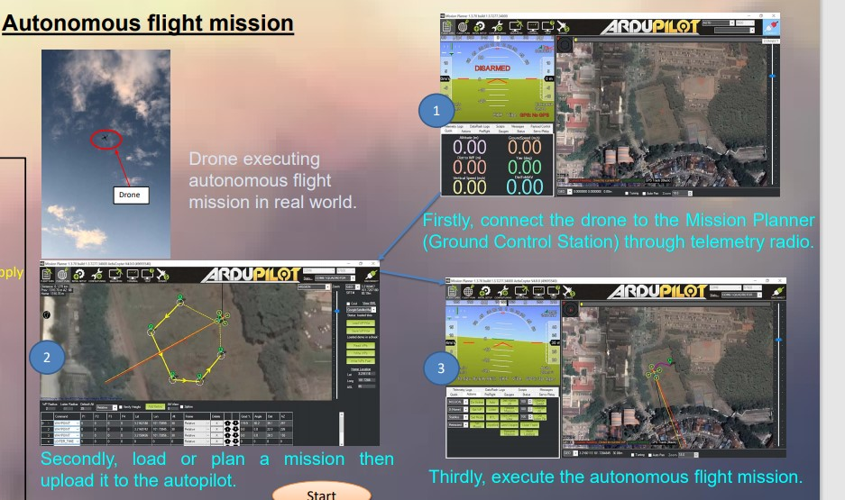

Capstone Project
Autonomous Drone with Wireless Charging for Agriculture 4.0
During my third year of study of my engineering degree program, I was given the opportunity to work on developing a drone with wireless charging capabilities for farming which is proposed by my supervisor with 4 coursemate members. Agriculture mapping plays an important role in monitoring and management of soil, plantation and irrigation of any given farm land. The issue arises when the battery life of the drone has limitations when it comes to performing mapping for larger areas for the farmland as it has a short flight time. Therefore, it would be an advantage to have a system that can charge the battery of the drone automatically during flight.
Objectives
• Developing a smart drone capable for improving and ease the agricultural mapping process.
• Extending the maximum flight time of the drone by developing a wireless charging system.
• Reduce the need for any human intervention for controlling the drone.
• Implementing a drone with precision landing feature in order for the drone to land accurately.
Methodology
Schematic of Wireless Charging Drone
Schematic of Wireless Charging Circuit
Guide for Autonmous Flight for Agricultural Mapping
Conclusion
• A smart drone which can be used for agricultural mapping purposes can be developed and assembled using a S500 drone kit and various components.
• A Mission Planner software by ArduPilot is able to set up the Pixhawk 4, calibrate the components and perform autonomous flight which planning a Flight Route and is able to fly back to home which is where the Wireless Charging Station is located when the battery is low.
• Wireless power transfer system which uses the concept of magnetic resonance can be developed to charge the LiPo battery of the drone.
• Prolong the charging time of the drone.